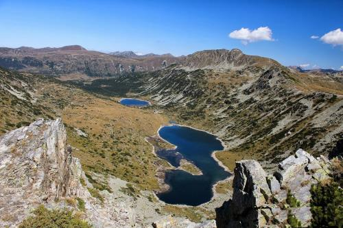
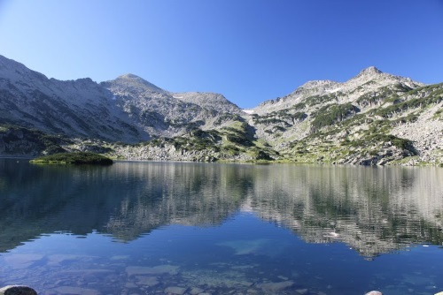
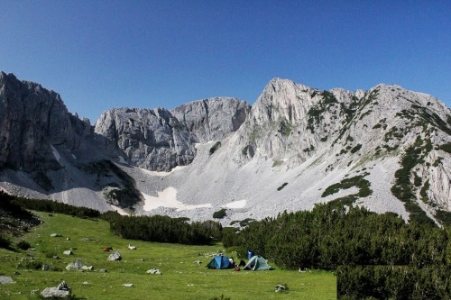
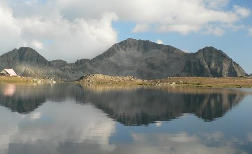

The Beauty of Bulgarian Mountains

"Ribni ezera" lakes, Rila mountain

"Popovo ezero" lake, Pirin mountain
"Kademliisko praskalo" waterfall, Balkan range
Sinanica lake and Sinanica hut, Pirin mountain

Sinanica peak, Pirin mountain

Kamenica peak and Tevno ezero lake, Pirin mountain